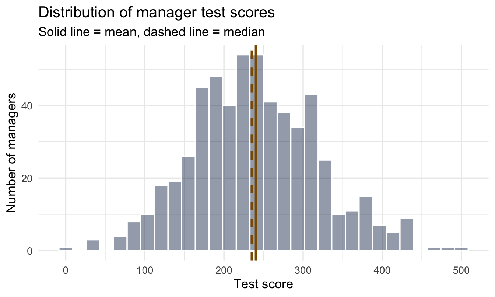
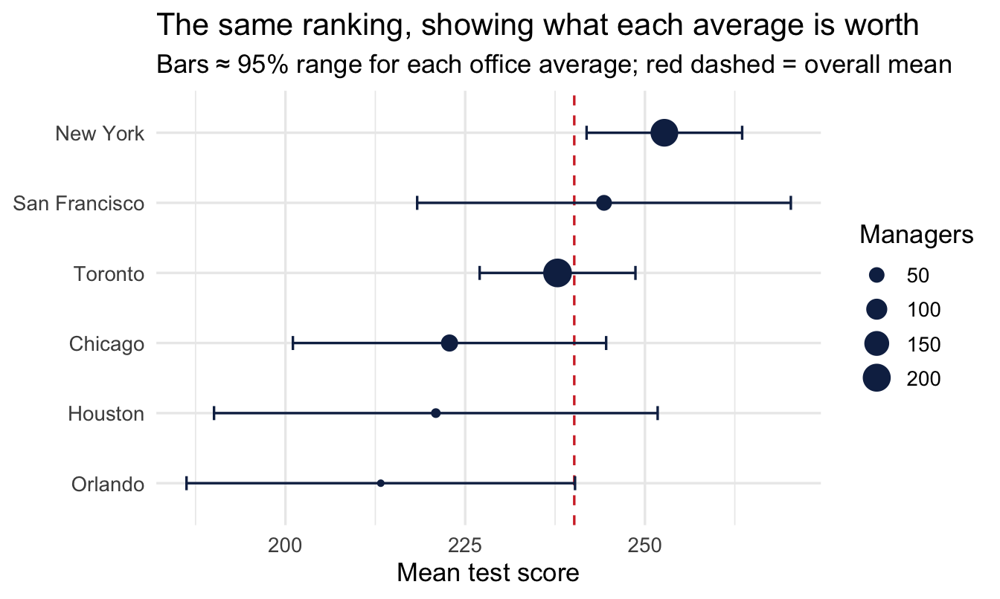
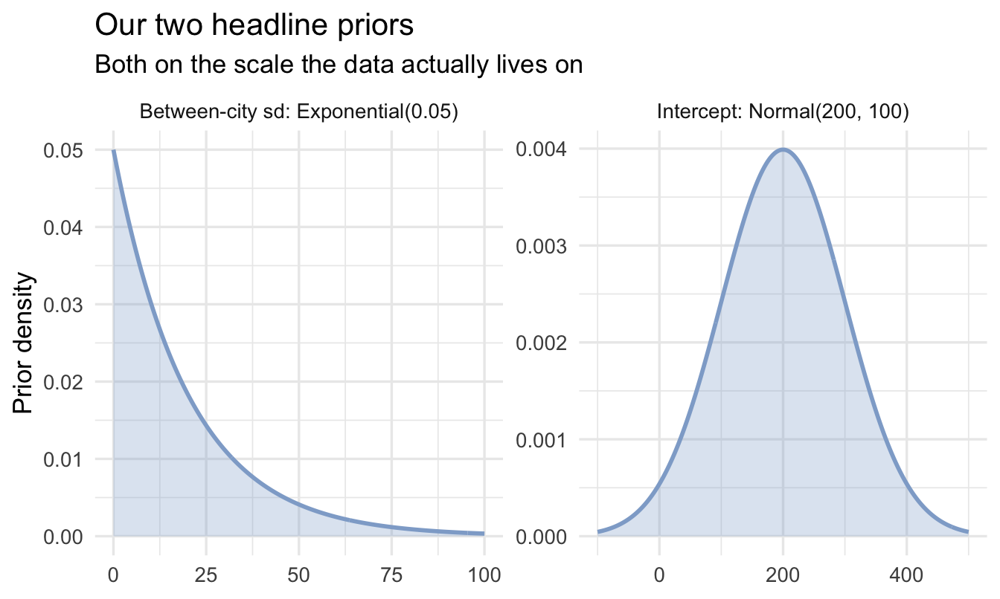
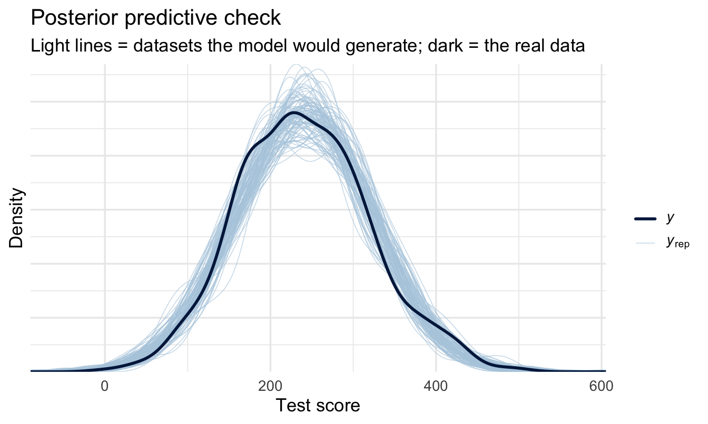
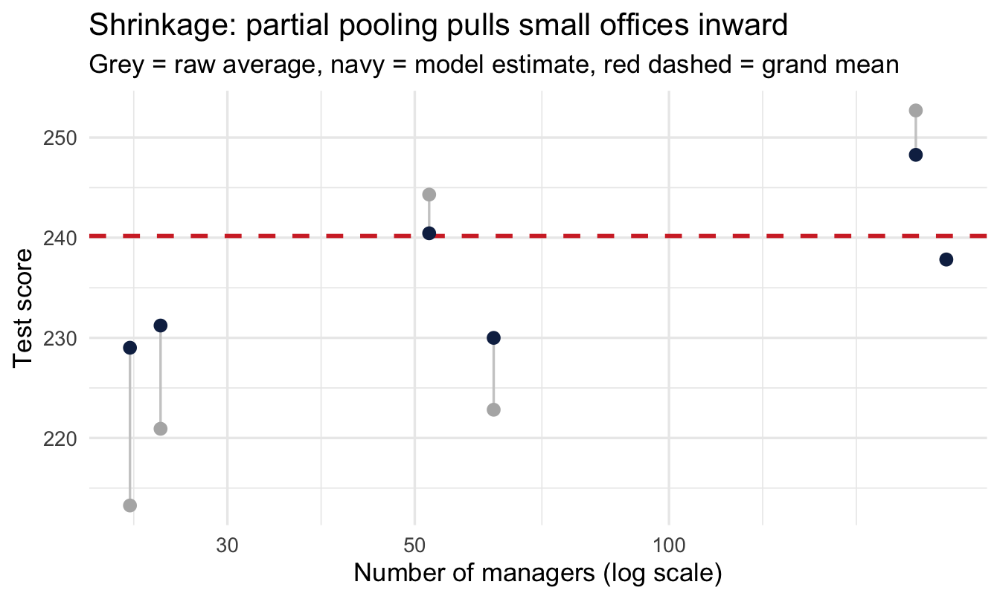
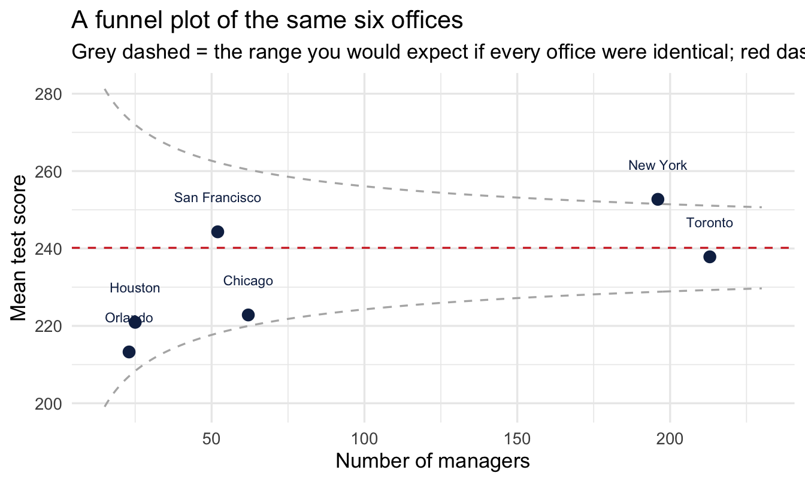

library(tidyverse)
library(peopleanalyticsdata)
library(brms)
library(tidybayes)
theme_set(theme_minimal(base_size = 13))
set.seed(2026)
data("managers", package = "peopleanalyticsdata")
# Drop rows missing either variable we're about to model, following the
# check-before-you-summarise habit from Chapter 1.
managers <- managers |> drop_na(test_score, city)8 When Data Has Structure: Multilevel Models
Welcome back
People Analytics data is almost always grouped: employees within managers, managers within offices, survey responses within teams, performance within business units.
Important
Observations in the same group resemble each other. Pretending they’re independent makes you overconfident — and a sceptical stakeholder notices.
The problem Chapter 7 left open
Chapter 7 compared sales across four performance tiers, and set something aside in order to do it: those ratings were assigned by different managers, and managers do not rate alike. One is quietly proud of never awarding a 4. Another hands them out to keep people motivated. Pool them into four clean tiers and a “4” means a different thing depending on who wrote it.
That is not a data-quality grumble to be noted and walked past. It is a structure — ratings sit inside managers, the way employees sit inside teams and survey responses sit inside sites — and structure of that kind has a model.
The instinct is to reach for one of two bad options. Ignore the manager and pool everything, accepting that part of the gap between tiers is really the gap between a strict manager and a generous one. Or split the data and handle each manager separately, comparing people only against others rated by the same person — which throws away most of your evidence, because a manager with six reports gives you almost nothing to work with.
The answer in this chapter is neither, and it is the idea the whole of Part V is built on: give each manager their own baseline, and let the data decide how far to trust it. A manager with forty ratings mostly keeps their own standard. A manager with four gets pulled almost all the way to the organisational average, because four ratings is not evidence of a rating style. Nobody picks a cutoff for “enough ratings”; the model works out what each manager’s evidence is worth.
Hold that example in mind, because the same idea arrives next in a form you have almost certainly seen on a slide.
The league table
Here is a thing that happens in every organisation, probably this quarter.
Someone runs the numbers on manager assessment scores by office, sorts them descending, and puts the table on a slide. The top office gets praised and asked to share what it’s doing. The bottom office gets a development plan, or a visit.
The table is arithmetically correct. Every average in it is computed properly. And it is very likely to be close to meaningless, because a league table of group averages is partly a league table of group sizes — the smaller the office, the further from the middle its average can wander for no reason at all.
You already know why. Chapter 3 showed that an estimate from a small sample swings wildly, and Chapter 1 named the trap this creates: the extreme office regresses to the mean next year, and whatever intervention happened in between gets the credit.
Note
So the honest question isn’t “which office is best?” It’s “how much of this ranking is real, and how much is sample size?” — and that question has a proper answer.
Today we handle grouped data with a multilevel model, and meet one of the most elegant ideas in statistics: partial pooling. It’s the foundation for Chapters 14, 15 and 16, which are the chapters most People Analytics teams end up needing.
We switch to the managers dataset: manager test scores, grouped by city.
Analysis strategy
What we have. Manager test scores with the city each manager works in. The offices are very different sizes, which is the whole problem rather than a detail of it.
What would answer the question. Not a ranking — that is what the slide already has. What is needed is each office’s estimate with an honest interval, produced in a way that trusts a large office’s average more than a small one’s, so that “which offices genuinely differ” can be answered rather than assumed.
What could go wrong. Two options present themselves and both are wrong. Pool everything and every office gets the same estimate, which denies real differences. Treat each office separately and the four-person office gets an estimate built on four people, which is how the current league table came to be misleading. There is also a trap on the other side: once you have several offices you are making several comparisons, and someone will ask whether that needs correcting for.
So the plan. Fit a model that gives each office its own intercept but ties those intercepts together, so each estimate borrows strength from the whole according to how much evidence it has. Watch the small offices move. Then answer the multiple-comparisons challenge directly, because it will be put to you.
What would make us stop. If the between-office spread comes back indistinguishable from zero, there is no league table here and the right deliverable is a sentence saying the offices cannot be told apart — not a ranking with a caveat underneath it, which is what gets published and then acted on.
What you’ll be able to do by the end
- Recognise hierarchically structured data, and why ignoring the structure makes you overconfident
- Explain complete pooling, no pooling, and partial pooling — and why the third is almost always right
- Fit a varying-intercepts model with
brms - See shrinkage happen, and explain to a stakeholder why the small office moved
- Answer the “shouldn’t you correct for multiple comparisons?” challenge, and know exactly how far the answer goes
- Read the group-level (hyper)parameters, including one that is a business finding in its own right
- Predict for a group you have no data on at all
8.1 Setup
managers has 571 managers, one row each, with a test_score (a score on a standard assessment given to all managers) and city (their office location) — exactly the grouped shape we need.
Look at the scale before you choose a prior
Chapter 5’s rule was never to write a prior for a variable you haven’t looked at. test_score is on an unfamiliar scale, so:
managers |>
summarise(
n = n(),
mean = mean(test_score),
sd = sd(test_score),
lowest = min(test_score),
highest = max(test_score)
) n mean sd lowest highest
1 571 240.1716 80.04233 0 500Scores run in the hundreds, not the tens — worth thirty seconds of checking, because a prior written for the wrong order of magnitude will quietly fight the data and produce a badly-behaved model.
I always plot the variable as well as summarising it. Summary statistics tell you where a variable sits; only the picture tells you whether it sits there in the way you assumed. Five numbers are compatible with a great many shapes, and some of those shapes would change the model.
ggplot(managers, aes(x = test_score)) +
geom_histogram(bins = 30, fill = "#122a52", alpha = 0.45, colour = "white") +
geom_vline(xintercept = mean(managers$test_score),
colour = "#8a5a00", linewidth = 1) +
geom_vline(xintercept = median(managers$test_score),
colour = "#8a5a00", linewidth = 1, linetype = "dashed") +
labs(title = "Distribution of manager test scores",
subtitle = "Solid line = mean, dashed line = median",
x = "Test score", y = "Number of managers")
One broad hump, mean and median close together, no second cluster and no wall of scores piled at a maximum. That’s the shape family = gaussian() assumes, so the default choice is defensible here rather than merely conventional. Had the picture shown two humps, or a hard ceiling, or a long tail on one side, the model below would have needed to change — and no summary table would have told us.
- 1
- The grand mean across all offices. Centred at 200 with plenty of room either side — we know the scale, and little else.
- 2
-
How much offices differ from each other. Rate 0.05 means an expected between-office spread of about 20 points (remember from Chapter 5: the exponential’s average is 1 ÷ rate). This is the new parameter class in this chapter —
sdis always the group-level variation. - 3
- How much individual managers differ within an office. Expected around 100, using the range ÷ 4 rule from Chapter 5.
8.2 The problem
8.2.1 Look at our cities
raw <- managers |>
group_by(city) |>
summarise(
raw_mean = mean(test_score),
n = n(),
1 se = sd(test_score) / sqrt(n())
) |>
arrange(n)
raw- 1
- The standard error from Chapter 3 — σ ÷ √n. This is the column the league table never has, and it’s the one that decides whether the ranking means anything.
# A tibble: 6 × 4
city raw_mean n se
<fct> <dbl> <int> <dbl>
1 Orlando 213. 23 13.5
2 Houston 221. 25 15.4
3 San Francisco 244. 52 13.0
4 Chicago 223. 62 10.9
5 New York 253. 196 5.41
6 Toronto 238. 213 5.42Read the n column before the raw_mean column. Orlando has 23 managers; Toronto has 213. That is a ninefold difference in how much evidence sits behind each average, and nothing on the slide version of this table would tell you so.
Now look at se. One standard error is about 5 points for Toronto and about 15 for Houston — and because a 95% range runs roughly two standard errors either side, that is ±11 against ±31. The small offices are not slightly less reliable than the large ones — they are about three times less reliable.
Put the two together and the ranking starts to fall apart. New York tops the table at 253 and San Francisco follows at 244, a gap of nine points — but San Francisco’s own average carries a standard error of 13. The bottom three offices sit at 223, 221 and 213, separated by gaps smaller than any of their standard errors. Most of the ordering in this table is not a finding about offices. It is the arithmetic of unequal sample sizes.
8.2.2 The league table, with its error bars restored
ggplot(raw, aes(x = raw_mean, y = fct_reorder(city, raw_mean))) +
geom_vline(xintercept = mean(managers$test_score),
linetype = "dashed", colour = "#d32f2f") +
geom_errorbarh(aes(xmin = raw_mean - 2 * se,
xmax = raw_mean + 2 * se),
height = 0.2, colour = "#122a52") +
geom_point(aes(size = n), colour = "#122a52") +
labs(title = "The same ranking, showing what each average is worth",
subtitle = "Bars ≈ 95% range for each office average; red dashed = overall mean",
x = "Mean test score", y = NULL, size = "Managers")
ImportantWhat the error bars do to the story
The point estimates give you a clean, confident ordering. The bars show most of that ordering is inside the noise — the small offices have intervals wide enough to be almost anywhere, and several offices that look separated on the slide have intervals that overlap heavily.
Two things follow, and they pull in the same direction:
- A small office’s average is a weak estimate, not a strong result. A handful of unusually strong or weak test-takers moves it a long way.
- Ranking amplifies exactly this. Sorting descending puts whichever group got the luckiest draw at the top, and small groups get lucky more often than large ones. The top of a league table is therefore systematically enriched with small groups — and they are the ones most likely to look ordinary again next year.
NoteWhy not just drop the small offices?
It’s the obvious fix and it’s a bad one. You’d be discarding real information about real employees, and you’d still have to defend the threshold — is 30 managers enough? 50? Whatever line you draw, an office just above it gets treated as reliable and one just below gets deleted from the analysis entirely.
Partial pooling does something better: it keeps every office and weights each one by how much evidence it actually carries. Nothing is thrown away, and no threshold has to be defended.
8.3 Three ways to handle groups
Pooling means combining data across groups. The question in this section is how much of it to do, and there are only three answers available.
At one extreme you can treat the six offices as if they were one — pool everything, and accept that you have thrown away the differences between them. At the other you can treat each office as a separate world with nothing to learn from the others — pool nothing, and accept that a 23-manager office gets the same trust as a 213-manager one.
Neither is right, and the useful answer is the one in between. The rest of this chapter is about how a model finds it for you.
8.3.1 Option 1 — complete pooling
One average across all responses, used for every office.
- Pro — uses all the data, very stable
- Con — pretends every office is identical, which is plainly false
8.3.2 Option 2 — no pooling
A separate average for each office — the raw means above.
- Pro — respects that offices differ
- Con — over-trusts tiny samples; the small-n offices dominate the extremes
8.3.3 Option 3 — partial pooling
Important
Each office gets its own estimate, but offices with little data are pulled toward the overall average — by an amount the data itself decides.
Big offices barely move. Small ones move a lot. Nobody has to choose the amount by hand.
8.3.4 How much does each office move?
The mechanism is worth seeing, because “the model decides” sounds like magic and isn’t. Each office’s estimate is a weighted average of its own raw mean and the grand mean, and the weight on its own data is:
w = \frac{n}{n + \sigma^2 / \tau^2}
How much you trust an office’s own average depends on how many managers it has, relative to how noisy individuals are compared with how much offices genuinely differ.
Read what that does at the extremes:
- Large n → w approaches 1. The office keeps its own average. It has earned it.
- Small n → w approaches 0. The office is pulled towards the grand mean, because its own average is mostly noise.
- Offices genuinely differ a lot (large τ) → everyone keeps more of their own average, because being different is expected.
- Offices are all much the same (small τ) → everyone is pulled hard towards the middle, because apparent differences are probably noise.
Note
That last pair is the clever bit. The model doesn’t just ask how much data each office has — it also learns from the offices collectively how different offices tend to be, and uses that to judge how seriously to take any individual one. No single office could work this out alone.
8.4 Fit a varying-intercepts model
The formula test_score ~ 1 + (1 | city) reads: an overall average (1), plus a city-specific adjustment ((1 | city)) drawn from a shared distribution across cities. Still the same brm(), same family = gaussian() — the only thing that’s new is what’s inside the formula.
This model introduces a genuinely new kind of prior: not just “where’s the average,” but “how much do groups typically vary” — the τ in the weighting formula above. That’s the class = sd prior we set in the setup. As always, look at both before fitting:
Show the plotting code
bind_rows(
tibble(x = seq(-100, 500, length.out = 400), parameter = "Intercept: Normal(200, 100)") |>
mutate(density = dnorm(x, mean = 200, sd = 100)),
tibble(x = seq(0, 100, length.out = 400), parameter = "Between-city sd: Exponential(0.05)") |>
mutate(density = dexp(x, rate = 0.05))
) |>
ggplot(aes(x, density)) +
geom_area(fill = "#8fabd0", alpha = 0.30) +
geom_line(colour = "#8fabd0", linewidth = 1) +
facet_wrap(~ parameter, scales = "free") +
labs(title = "Our two headline priors",
subtitle = "Both on the scale the data actually lives on",
x = NULL, y = "Prior density")
- 1
-
Double the usual iterations. At the standard 2,000 this model returns
Rhat = 1.01on the intercept — right at the threshold the diagnostics box below tells you not to accept. Six groups is a hard posterior to explore, and the cheapest fix is to run longer. - 2
-
The first time we’ve needed an extra argument beyond the standard call. Multilevel models have an awkwardly shaped posterior — when a group-level
sdcould plausibly be near zero, the geometry narrows to a spike the sampler can overshoot, and you get divergent transition warnings. Raisingadapt_deltamakes the sampler take smaller, more careful steps. It’s slower and it’s the standard first response. Chapter 11 explains what’s actually happening.
Family: gaussian
Links: mu = identity
Formula: test_score ~ 1 + (1 | city)
Data: managers (Number of observations: 571)
Draws: 4 chains, each with iter = 4000; warmup = 2000; thin = 1;
total post-warmup draws = 8000
Multilevel Hyperparameters:
~city (Number of levels: 6)
Estimate Est.Error l-95% CI u-95% CI Rhat Bulk_ESS Tail_ESS
sd(Intercept) 12.10 7.53 1.18 30.34 1.00 1958 2079
Regression Coefficients:
Estimate Est.Error l-95% CI u-95% CI Rhat Bulk_ESS Tail_ESS
Intercept 236.01 7.33 219.53 249.07 1.00 2892 2990
Further Distributional Parameters:
Estimate Est.Error l-95% CI u-95% CI Rhat Bulk_ESS Tail_ESS
sigma 79.71 2.33 75.27 84.46 1.00 7123 5369
Draws were sampled using sampling(NUTS). For each parameter, Bulk_ESS
and Tail_ESS are effective sample size measures, and Rhat is the potential
scale reduction factor on split chains (at convergence, Rhat = 1).8.4.1 Two new numbers to read
The output has grown a section. Before reading any of it as a finding, here is what each block is telling you, in order of how much it matters.
sigma, at the bottom, is how much individual managers differ from each other. About 80 points. Two managers picked at random from the same office typically score around 80 points apart.
sd(Intercept), at the top, is how much the offices differ. About 12 points. That is the number the whole league table was implicitly claiming to measure.
Intercept, in the middle, is the average across offices — about 236 — now estimated properly rather than by averaging six averages of very different sizes.
Important
Put the first two side by side and the chapter’s argument is finished in one line: differences between individual managers are roughly seven times larger than differences between offices.
Around 2% of the variation in test scores sits between offices. The other 98% sits between people working in the same office. A league table of office averages is a ranking of the 2%, presented as though it were the whole story.
That ratio has a name — the intraclass correlation — and Chapter 16 turns it into a finding in its own right rather than a caveat.
Note
sd(Intercept) is a real finding
It answers a genuine business question: “how much does manager assessment performance actually vary between our offices?” A small value means your offices are consistent and the league table was noise; a large one means office genuinely matters and is worth investigating.
Report it with its interval, not as a point. Which brings us to an honest caveat.
8.4.2 Six groups is not many
Look at the credible interval on sd(Intercept). It runs from about 1.5 to about 30 — the estimate is 12, and the data cannot rule out either “offices are essentially identical” or “offices differ by 30 points”. That interval is enormous, and it will be, because we are trying to estimate how much offices vary from only six offices. Six numbers is thin evidence about a spread, in exactly the way that Chapter 3 warned a small sample would be.
This is the most common honest limitation of multilevel models in People Analytics, and it’s worth stating out loud rather than hiding: you often have plenty of people and very few groups. The model is still the right choice — partial pooling with six groups beats both alternatives — but the between-group variance is the parameter you should be most cautious about quoting.
A rough guide: with fewer than about five groups the variance component is barely identified and you’re leaning on your prior; by ten or fifteen it starts to firm up; with fifty you can take it seriously. Chapter 15 partially pools across 571 individual managers, and the difference in precision is obvious when you get there.
TipCheck the diagnostics here especially
Chapter 5 said Rhat should read 1.00 and ESS should run into the thousands. Multilevel models are the first place in this book where that isn’t automatic — the awkward geometry mentioned above makes them genuinely harder to sample.
If you see Rhat at 1.01 or above, low Bulk_ESS, or divergent transition warnings, do not report the model. Raise adapt_delta towards 0.99, increase iter, and check your priors are on the right scale — an off-scale prior fighting the data is a common cause, and it’s why we measured test_score before writing one.
8.4.3 Does it fit?
Diagnostics said the sampler behaved. That is step 7. Step 8 asks a different question — not did the machinery work but can this model produce data that looks like ours:
pp_check(fit_ml, ndraws = 100) +
labs(title = "Posterior predictive check",
subtitle = "Light lines = datasets the model would generate; dark = the real data",
x = "Test score", y = "Density")
Look for the dark line sitting inside the light ones. A multilevel model can pass every convergence check and still be the wrong shape — if test scores are bimodal, or bounded, or have a spike at zero, a Normal likelihood will smooth straight over it and the shrinkage estimates inherit the error.
Note
Two things this check will not tell you, and it is worth knowing the boundary. It does not tell you whether six groups is enough to estimate sd(Intercept) — nothing does, beyond reporting the interval, which we did above. And it does not tell you whether the offices differ because of something about the offices. That is a causal question, and Chapter 21 is where it gets answered.
8.5 See the shrinkage
We’re about to use add_epred_draws() again — the “epred” is expected prediction, introduced in Chapter 6 alongside add_predicted_draws(). The reminder, since it matters here: epred gives you the posterior for the average in each group, carrying only the uncertainty in the model’s parameters. predicted would give you the range for a single new manager, which is much wider and is not the question a league table asks.
grand_mean <- mean(managers$test_score)
pooled <- managers |>
distinct(city) |>
add_epred_draws(fit_ml) |>
mean_qi(.epred)
compare <- left_join(raw, pooled, by = "city")
ggplot(compare, aes(x = n)) +
geom_hline(yintercept = grand_mean, linetype = "dashed",
colour = "#d32f2f", linewidth = 1) +
geom_segment(aes(xend = n, y = raw_mean, yend = .epred),
colour = "grey80") +
geom_point(aes(y = raw_mean), colour = "grey70", size = 2.5) +
geom_point(aes(y = .epred), colour = "#122a52", size = 2.5) +
scale_x_log10() +
labs(title = "Shrinkage: partial pooling pulls small offices inward",
subtitle = "Grey = raw average, navy = model estimate, red dashed = grand mean",
x = "Number of managers (log scale)", y = "Test score")
8.5.1 Read it left to right
- Left (few managers) — long grey lines: extreme raw averages pulled hard toward the middle
- Right (many managers) — barely any movement: the model trusts them
Important
The model worked out how much to trust each office, all by itself. Nobody set a threshold, nobody dropped a small office, and nobody had to argue about where the cut-off should sit.
8.6 The other way people fix this: the funnel plot
Partial pooling is not the only answer to the unequal-groups problem, and it is not the best known one. In healthcare and education, where published league tables of hospitals and schools do real damage, the standard tool is the funnel plot, popularised by David Spiegelhalter. It is worth knowing, both because you will meet it and because comparing the two makes clear what partial pooling actually buys you.
The idea is simple. Plot each group’s average against its sample size, then draw the range within which an average would be expected to fall if every group were identical. That range is wide for small groups and narrow for large ones, so the boundaries form a funnel.
1sigma_within <- managers |>
group_by(city) |>
summarise(s = sd(test_score), n = n(), .groups = "drop") |>
summarise(pooled = sqrt(sum((n - 1) * s^2) / sum(n - 1))) |>
pull(pooled)
funnel <- tibble(n = seq(15, 230, length.out = 300)) |>
mutate(
2 lower = grand_mean - 2 * sigma_within / sqrt(n),
upper = grand_mean + 2 * sigma_within / sqrt(n)
)
ggplot() +
geom_line(data = funnel, aes(n, lower), colour = "grey70", linetype = "dashed") +
geom_line(data = funnel, aes(n, upper), colour = "grey70", linetype = "dashed") +
geom_hline(yintercept = grand_mean, colour = "#d32f2f", linetype = "dashed") +
geom_point(data = raw, aes(n, raw_mean), colour = "#122a52", size = 3) +
geom_text(data = raw, aes(n, raw_mean, label = city),
nudge_y = 9, size = 3, colour = "#122a52") +
labs(
title = "A funnel plot of the same six offices",
subtitle = "Grey dashed = the range you would expect if every office were identical; red dashed = overall mean",
x = "Number of managers", y = "Mean test score"
)- 1
- The pooled within-office standard deviation — how much individual managers differ, averaged properly across offices of different sizes.
- 2
-
The expected range for a group of size
n, two standard errors either side of the overall mean. This is the Chapter 3 formula again, drawn as a curve instead of evaluated at one point.

Read it by asking which points fall outside the funnel. Inside means the office is no further from the average than sampling noise would comfortably explain. The plot makes the small-office problem impossible to miss: the funnel is so wide on the left that an office of 23 managers has to be extraordinary before it counts as different at all.
8.6.1 Which should you use?
They answer different questions, and the difference is worth being precise about.
The funnel plot asks, of each office separately: could this difference be chance? It needs no model, takes one line to explain, and is very hard to argue with in a room. What it does not do is give you a better number. It tells you which averages to ignore; it leaves the averages themselves untouched.
Partial pooling asks: what is my best estimate for each office, given everything I know? It answers for every office at once, produces a revised number rather than a verdict, and carries its uncertainty with it.
Important
Which means the answer to the stakeholder who wanted a ranking is not “you can’t have one”. You can have a league table — just not one built from raw averages. Rank the partially pooled estimates instead. Small offices will sit closer to the middle than they used to, which is the honest position for them to occupy, and the ordering that survives is the ordering the evidence actually supports.
That is a much better conversation than refusing the request, and it is why this chapter ends with a model rather than a warning.
The two tools also work well together. The funnel plot is the better picture for showing an audience why the raw table was misleading; the pooled estimates are the better basis for what you do next. Chapter 15 takes the second half of that much further, ranking 571 individual managers.
NoteWhat to say when someone asks why the number changed
You will be asked this, and “shrinkage” is not the answer to give.
The version that works: “That office has eleven managers. If we reported their raw average we’d be treating eleven people’s scores as though they were as reliable as Toronto’s two hundred, and they aren’t — with that few, the average could easily land several points either side by chance. So the estimate leans partly on what we know about offices in general. As the office grows, it’ll rely more on its own numbers and less on everyone else’s.”
That’s an argument about how much evidence there is, which stakeholders accept readily. It’s the same argument you’d make against declaring a trend from two data points.
8.6.2 The multiple comparisons problem, quietly solved
Somebody trained classically will now raise a hand. We have six offices. Comparing all of them against each other is fifteen comparisons, and everyone learns that testing fifteen things at the 5% level will hand you a “significant” result roughly half the time by chance alone. The classical fix is a correction — Bonferroni, Tukey, false discovery rate — which widens every interval to buy back the error rate you spent.
We haven’t applied one, and we aren’t going to. Here’s why.
ImportantPartial pooling has already done the work
The classical problem arises because no pooling lets each office’s estimate go wherever its own small sample points, and then asks fifteen questions of estimates that were free to wander. The corrections are applied afterwards, to compensate.
Partial pooling stops it happening in the first place. Every office’s estimate has already been pulled towards the grand mean by an amount set by its sample size, so the extremes that generate spurious “differences” have been damped before any comparison is made. The group-level prior — sd(Intercept), learned from the offices collectively — is doing structurally what a multiplicity correction does by decree, except that the data chose the amount rather than a convention.
Two things follow that are worth being precise about, because it is easy to overclaim here.
- This is a property of the multilevel model, not of Bayes on its own. A Bayesian model with a flat prior and no pooling would reproduce the classical problem faithfully. It’s the shared distribution across groups — Chapter 5’s point that a prior is a constraint, applied here to a whole family of estimates at once — that provides the protection. Gelman, Hill and Yajima make this argument in full in “Why we (usually) don’t have to worry about multiple comparisons” (Gelman et al. 2012); it is the standard reference if a stakeholder or a reviewer pushes.
- A credible interval doesn’t change when you look at another one. This is the deeper reason the machinery differs. A confidence interval is a statement about a procedure repeated over hypothetical datasets, so how many intervals the procedure produces changes what it guarantees. A posterior is a statement about the parameters given the data you have — asking a second question of the same posterior doesn’t alter the answer to the first. There is no error rate being spent, so there is nothing to correct.
Note
None of this licenses fishing. If you compute all fifteen contrasts and report the one that looks best, you’ll mislead people with or without a correction — the honest move is to say how many you looked at. The claim is narrower and more useful: with partial pooling doing the regularising, you don’t need to inflate your intervals to make the comparison legitimate.
Your turn
1. Which office has the largest gap between its raw average and its model estimate? Confirm it’s one with few managers.
2. Refit with prior(exponential(0.5), class = sd) — a prior insisting offices barely differ. Does shrinkage get stronger or weaker, and does that match the weighting formula from earlier?
# Hint for 1: add a column = abs(raw_mean - .epred) and arrange().8.7 Predicting a brand-new office
Suppose the business is opening in a city you have no managers in yet, and someone asks what to expect. Complete pooling would give you the grand mean with no acknowledgement that offices differ. No pooling can’t answer at all — there’s no group to look up.
tibble(city = "NEW_OFFICE") |>
1 add_epred_draws(fit_ml, allow_new_levels = TRUE) |>
mean_qi(.epred, .width = 0.95)- 1
-
allow_new_levels = TRUEtellsbrmsthis group wasn’t in the training data and that’s deliberate. It then draws a brand-new office-level offset from the distribution it learned across the six offices it has seen.
# A tibble: 1 × 8
city .row .epred .lower .upper .width .point .interval
<chr> <int> <dbl> <dbl> <dbl> <dbl> <chr> <chr>
1 NEW_OFFICE 1 236. 211. 256. 0.95 mean qi The estimate sits near the grand mean — sensible, since we know nothing specific — but the interval is wider than for any existing office, because it now carries the uncertainty about how much offices differ on top of the usual uncertainty.
Important
That’s the payoff of modelling the group-level distribution rather than just the groups. You get a defensible answer for a group you have never observed, with honest uncertainty attached — and “we opened a new office, what should we expect?” is a question People Analytics teams get asked constantly.
NoteWhere this goes next
Chapter 14 applies this exact idea in closed form, without fitting a full model (empirical Bayes). Chapter 15 goes deeper on partial pooling applied to individual managers rather than offices — the question most People Analytics teams actually get asked — and directly compares this model to the classical mixed-effects model (lme4::lmer()) you may already know.
Two further descendants are worth knowing about now, so you recognise them when they arrive. Chapter 16 turns sd(Intercept) from a caveat into the headline finding, decomposing pay variation across levels of an organisation. And Chapter 17 attaches this same grouping term to a survival model — a frailty model, where each group gets its own baseline risk of someone leaving. That last one is where this chapter’s argument pays off most directly: it answers “which managers lose people faster than their teams explain?” without the league table that started this chapter.
On the job
ImportantWhy this matters day to day
If your data is grouped — employees within managers, responses within teams, outcomes within regions — a multilevel model is usually the correct analysis, and a sophisticated stakeholder increasingly expects it. It stops you over-claiming from small subgroups, borrows strength across groups, and even lets you say something sensible about a group you’ve never seen before.
Summary
NoteToday you learned
- Grouped data needs multilevel models; ignoring structure makes you overconfident.
- A league table of group averages is partly a league table of group sizes. Put error bars on one and most of the ranking dissolves.
- Partial pooling sits between one-average-for-all and a-separate-average-each — and beats both. Don’t drop small groups instead; you’d lose data and still have to defend the threshold.
- How far each group moves is a weighted average, set by its sample size relative to how much groups genuinely differ. The model learns the second part from the groups collectively.
(1 | group)adds a varying intercept per group inbrms.- Shrinkage pulls small-sample groups toward the grand mean — and improves predictions. Explain it to stakeholders as an argument about how much evidence there is, never by using the word “shrinkage”.
- Partial pooling means you don’t apply a multiple comparisons correction. The pooling has already damped the extremes that the correction exists to punish — and a credible interval doesn’t change because you looked at another one.
sd(Intercept)estimates between-group spread, itself a finding — but it needs a decent number of groups to be estimated well, and six is not many.- Multilevel models are the first place sampling diagnostics stop being automatic. Check Rhat and ESS, and reach for
adapt_delta. - With a group-level distribution in hand you can predict for a group you’ve never observed.
Next chapter
Logistic regression for a yes/no outcome, which HR has a large number of.
Gelman, Andrew, Jennifer Hill, and Masanao Yajima. 2012. “Why We (Usually) Don’t Have to Worry about Multiple Comparisons.” Journal of Research on Educational Effectiveness 5 (2): 189–211. https://doi.org/10.1080/19345747.2011.618213.